Covid-19 Statistics
** Aligned data aligns first case or death in the specific country. This allows comparisons of different curves.
Aligned Daily Cases and Deaths
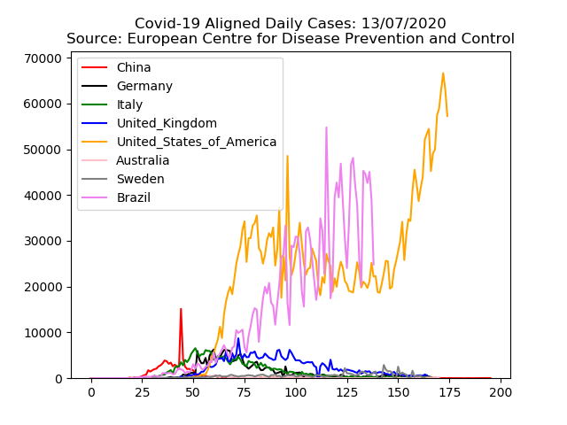
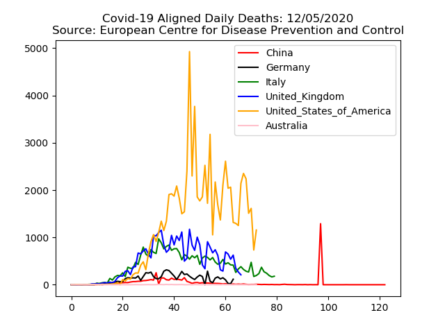
Aligned Cumulative Cases and Deaths
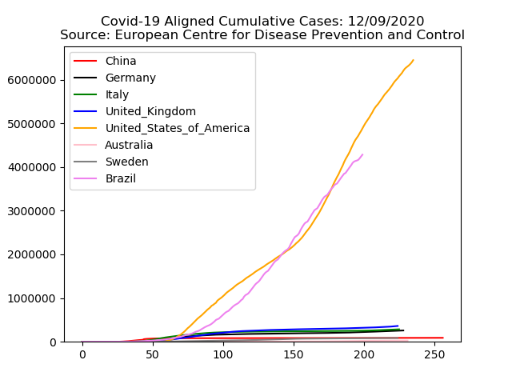
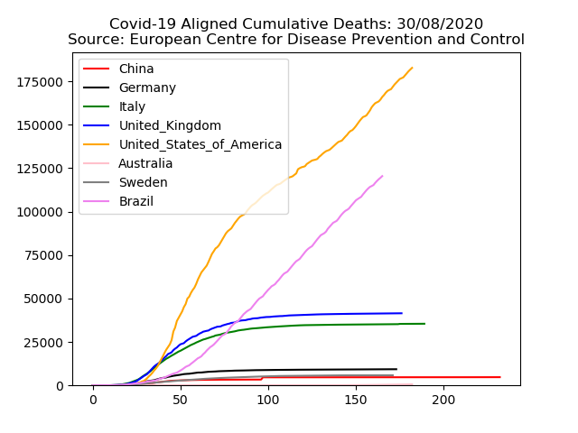
Aligned Daily Cases and Deaths - Instances Per 10 Million Population
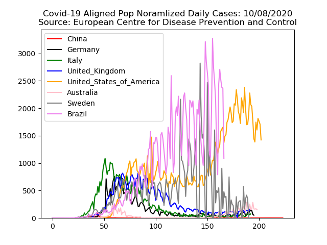
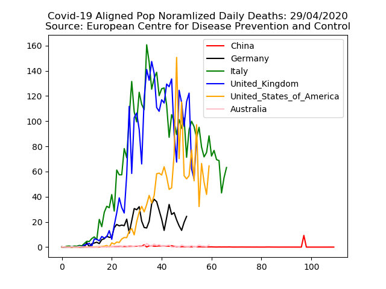
Aligned Cumulative Cases and Deaths - Instances Per 10 Million Population
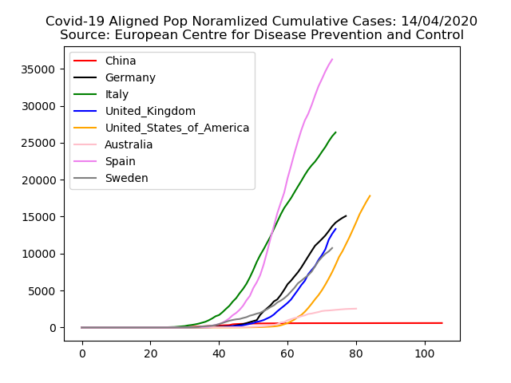
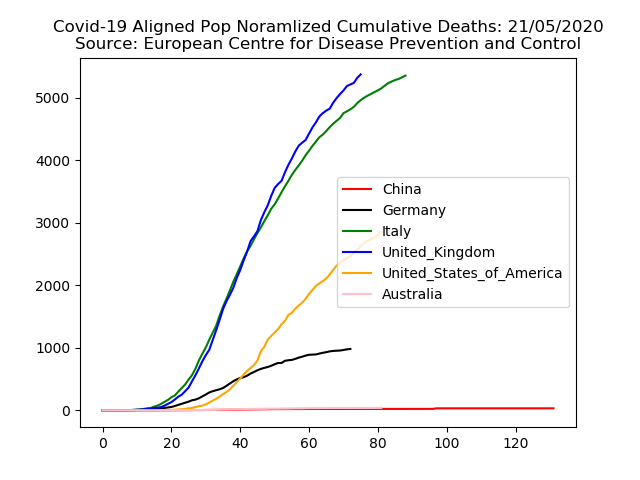
Daily Cases
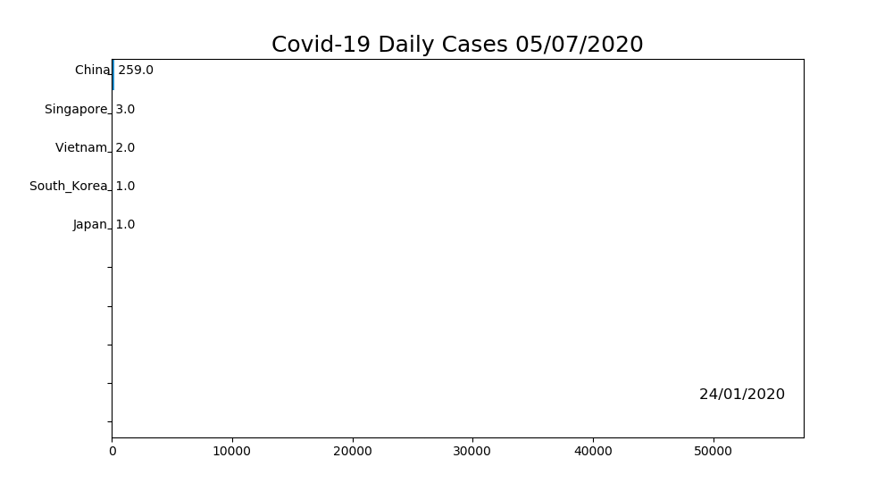
Daily Deaths
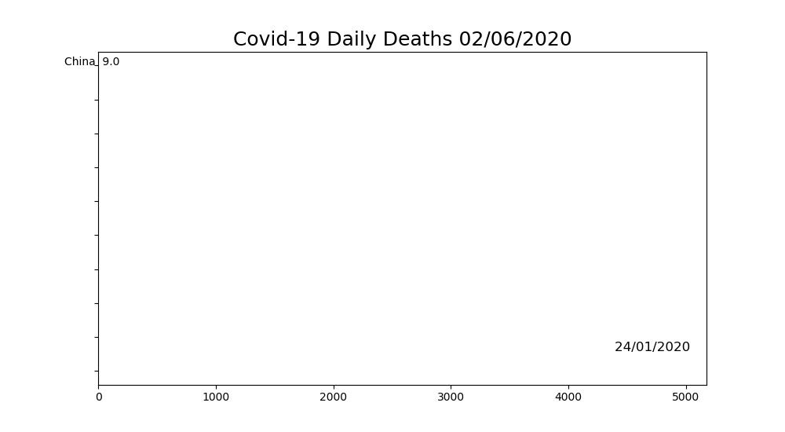
Cumulative Cases
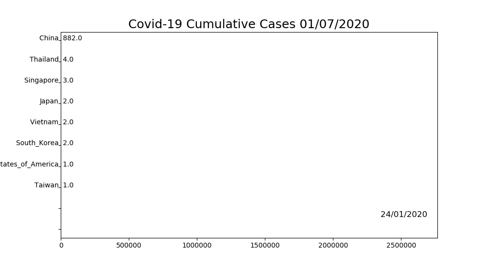
Cumulative Deaths
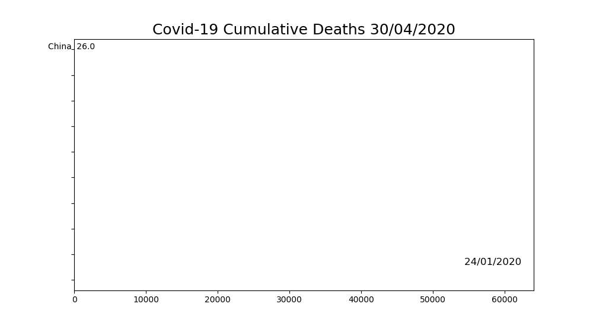
Country Summary
Reference :
These graphs have been generated using the public data from : European Centre for Disease Prevention and Control
Python source code to generate these graphs is available here : Edwards Lab, Github. Courtesy of : Edwards Lab, San Diego State University
Copyright © John Edwards 2020.